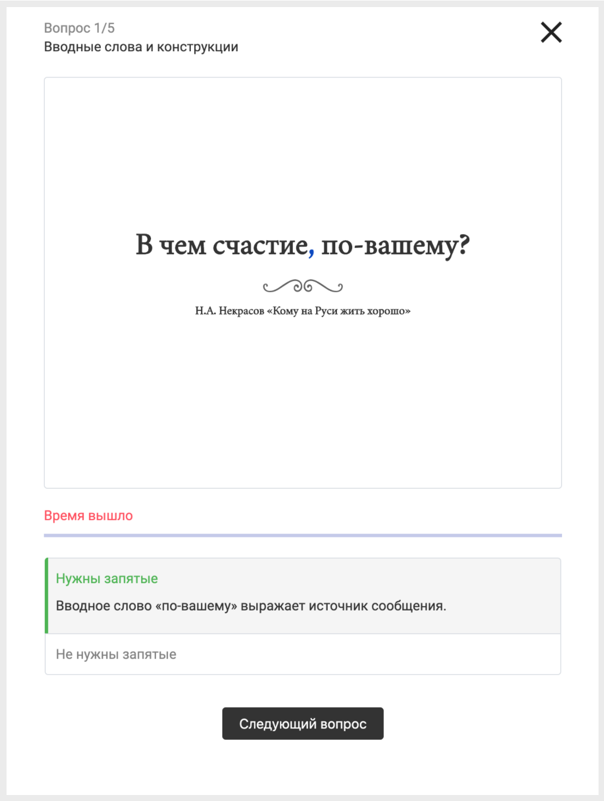
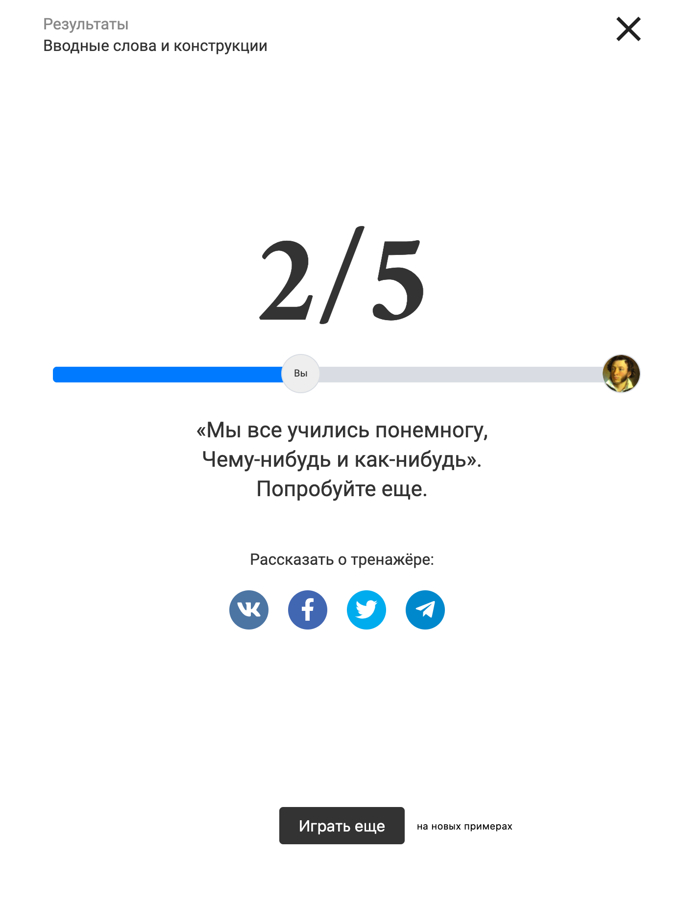
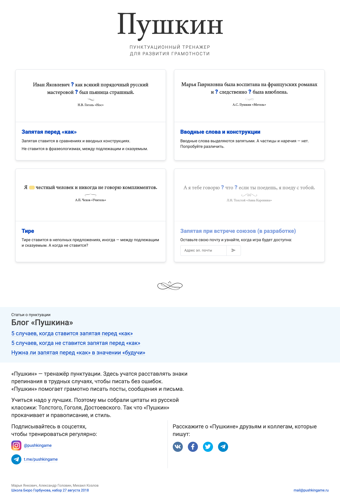
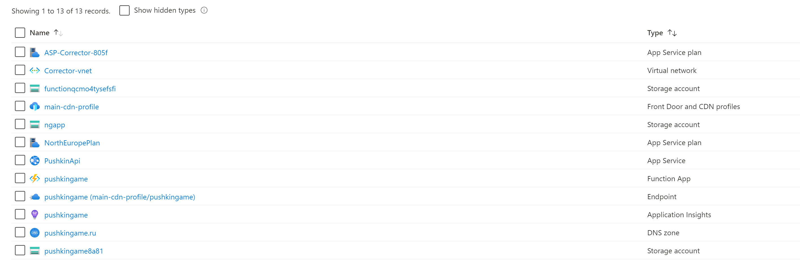

Russian language simulator pushkingame.ru
2020-04-28
Game page
With pushkingame simulator, you can learn how to make fewer mistakes writing in Russian. You should click on the right answer and you will see the right anser and related russian language rule.


Score page
After 5 answers you will see your score and realize how close you are to the famous Russian poet Alexander Pushkin.
Main page
We have three different games — commas, commas with timer and dash mode.

Technologies
I have been using Angular as a framework to develop pushkingame website. The source code is available on githab. The project is running in Github Pages.
